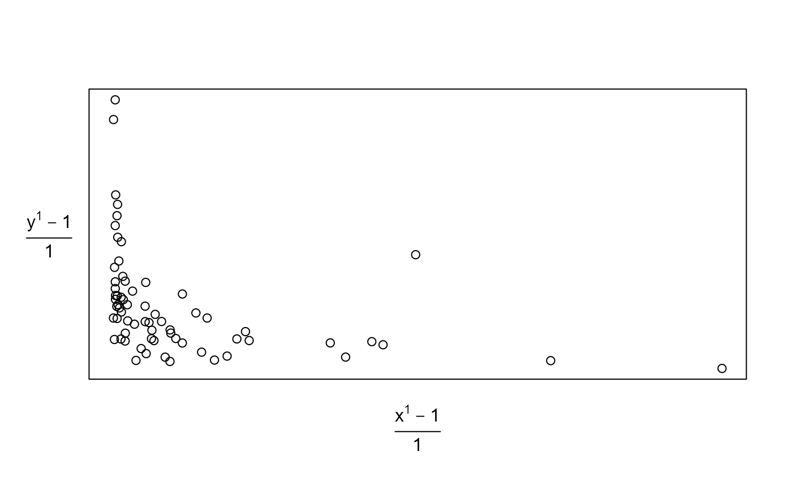
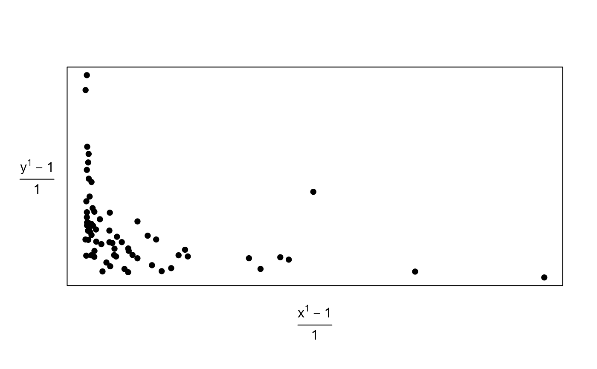

R/USelection_movie.R
scatterplot_movie.RdA movie to illustrate the effects of the transformation of variable(s) on the appearance of a scatter plot, using the 2000 U.S. Presidential Election data from Florida.
scatterplot_movie(
x,
y,
delta_power = 0.1,
pos = 1,
envir = as.environment(pos),
...
)Numeric vectors of the same length. Pairs of values to plot
using a scatter plot. The values in x will be plotted on the
horizontal axis, the values in y on the vertical axis.
A numeric scalar. The amount by which the powers of
x and y increase/decrease after one click of a button
in the parameter window.
A numeric integer. Used in calls to assign
to make information available across successive frames of a movie.
By default, uses the current environment.
An alternative way (to pos) of specifying the
environment. See environment.
Further arguments to be passed to
plot.
Nothing is returned, only the animation is produced.
scatterplot_movie produces a scatter plot of the input
variables x and y which can then be animated by
transforming x and/or y using power transformations.
[In fact a
Box-Cox transformation
is used.]
The power of x and y is chosen using a parameter windows
containing buttons labelled + and -.
Clicking + increases the power by delta_power and
clicking - decreases the power by delta_power.
stat0002movies: general information about the movies.
USelection: description of the 2000 U.S.
Presidential Election data from Florida.
# Proportion of votes gained by Buchanan
pbuch <- 100 * USelection$buch / USelection$tvot
# Produce plot
scatterplot_movie(x = USelection$npop, y = pbuch)

# Change the plotting character
scatterplot_movie(x = USelection$npop, y = pbuch, pch = 16)

# Identify Palm Beach using a different plotting character
county_name <- USelection[, "co_names"]
pb <- which(county_name == "PalmBeach")
my_pch <- rep(16, length(county_name))
my_pch[pb] <- 4
scatterplot_movie(x = USelection$npop, y = pbuch, pch = my_pch)